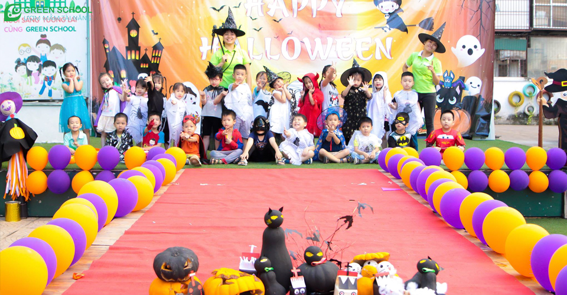
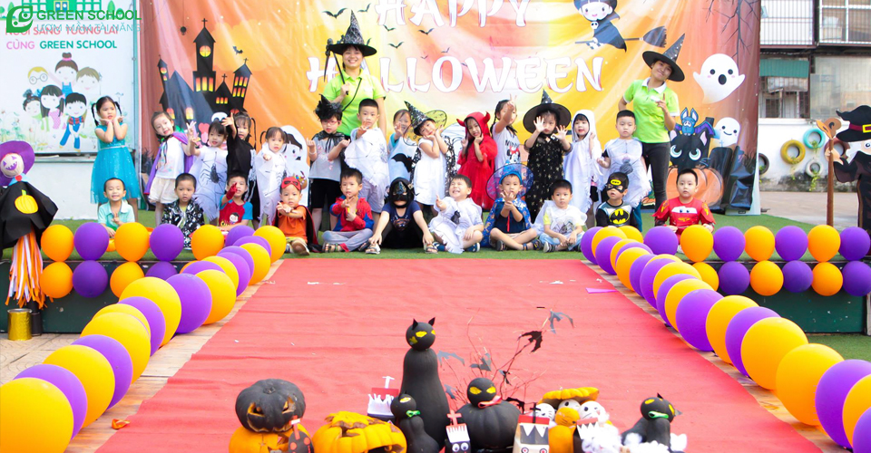
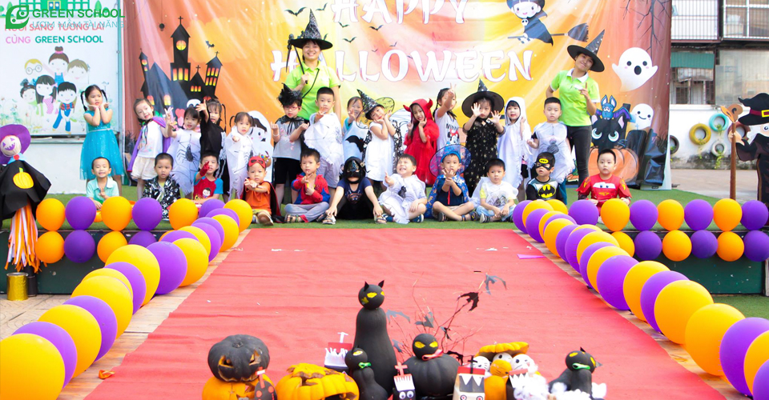
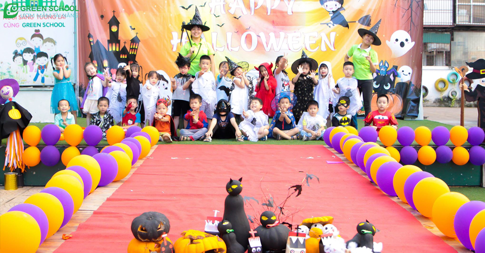

Halloween là một lễ hội truyền thống đặc biệt ở phương Tây
Halloween là lễ hội truyền thống đặc trưng ở phương Tây, có tên đầy đủ All Hallows' Evening hay còn gọi là "lễ hội ma quỷ". Lễ thường được tổ chức hàng năm vào ngày 31/10, trước buổi lễ Các Thánh trong Kitô Giáo. Halloween được diễn ra để đánh dấu sự kết thúc của một vụ mùa thu hoạch và bắt đầu mùa đông lạnh giá.
Nhiều tập tục Halloween ngày nay được cho là chịu ảnh hưởng từ thực hành dân gian của người Celt. Trong số đó, có liên quan nhiều nhất là lễ hội Samhain, tiếng Ireland cổ nghĩa là "kết thúc mùa hè", mừng vụ thu hoạch và đánh dấu sự chuyển mùa. Cho dù có thể mang các yếu tố Pagan giáo không thể phân biệt rạch ròi nhưng Halloween là lễ hội có nguồn gốc Kitô giáo.
Click vào đây để biết thêm nhiều thông tinHalloween hay còn được gọi là lễ hội ma quỷ thường diễn ra vào ngày 31/10
Ngày Halloween được tổ chức để đánh dấu sự kết thúc của vụ mùa thu hoạch và bắt đầu mùa đông lạnh giá, nhằm tưởng nhớ những người quá cố, gồm các vị thánh, các vị tử vì đạo và tất cả những người thân đã qua đời. Vào ngày 1/11 hàng năm, người Celt sẽ tổ chức lễ hội Samhain để đánh dấu cho sự kết thúc của mùa hè và thời tiết chuyển sang đông, đây cũng là thời điểm để khởi đầu một năm mới. Họ tin rằng khi mùa hè kết thúc và mùa đông lạnh lẽo, tràn đầy bóng tối bắt đầu thì vào đêm trước của năm mới (tức ngày 31/10) ranh giới giữa sự sống và cái chết trở nên mờ nhạt. Vào ngày này, người dân thường dập tắt các đám lửa trong nhà của họ, biến bản thân trở nên lạnh lẽo và hy vọng các linh hồn sẽ bỏ qua. Họ cũng có tục lệ mặc các trang phục mô phỏng ma quỷ, diễu hành ồn ào quanh các khu phố để trấn an nỗi lo sợ các linh hồn.
.jpg)
Theo truyền thuyết của người Ireland, một kẻ nghiện rượu tên là Sting Jack ăn trộm đồ trong ngôi làng và bị người dân đuổi đánh. Jack chạy trốn, trên đường, hắn gặp một con quỷ được sai đến để bắt linh hồn của hắn đi. Tuy nhiên Jack đã lừa con quỷ leo lên cây táo cổ thụ và không cho nó xuống bằng cách khắc dấu thánh giá vào vỏ cây. Con quỷ van xin và Jack bắt con quỷ phải thề rằng sẽ không bao giờ tước đi linh hồn của hắn. Sau này, Jack chết nhưng linh hồn của hắn không được lên thiên đàng vì những tội lỗi khi còn sống. Địa ngục cũng không có chỗ cho linh hồn hắn dung thân vì lời thề của con quỷ. Vì thế linh hồn của Jack phải lang thang nơi trần gian. Jack xin quỷ chút lửa để soi đường. Cuối cùng quỷ thương tình ném cho hắn hòn than lấy từ bếp lửa địa ngục không bao giờ tắt. Jack lấy củ cải đỏ đem khoét rỗng thành hình mặt quỷ, đặt hòn than bên trong. Từ đó, cứ mỗi mùa Halloween về, người nông dân ở các ngôi làng Ireland lại khắc những chiếc đèn lồng bằng củ cải để xua đuổi linh hồn của Jack và cả những bóng ma lang thang khác. Sau này khi nhập cư vào Mỹ, người Ireland đã biến quả bí ngô thành chiếc đèn lồng Jack-O-Lantern khắc hình mặt người rùng rợn với ngọn nến được thắp sáng bên trong như chúng ta vẫn thường thấy. Hơn nữa khi thắp đèn trong quả bí ngô họ thấy sáng hơn là thắp đèn bên trong củ cải, khoai tây hay bí đao nên quả bí ngô trở thành biểu tượng cho ngày lễ Halloween. Theo thời gian, lễ hội Halloween đã trở thành lễ hội truyền thống ở nhiều quốc gia trên thế giới. Người ta tin rằng những chiếc lồng đèn làm từ quả bí ngô sẽ xua đuổi ma quỷ và mang lại nhiều niềm vui cho mọi người.